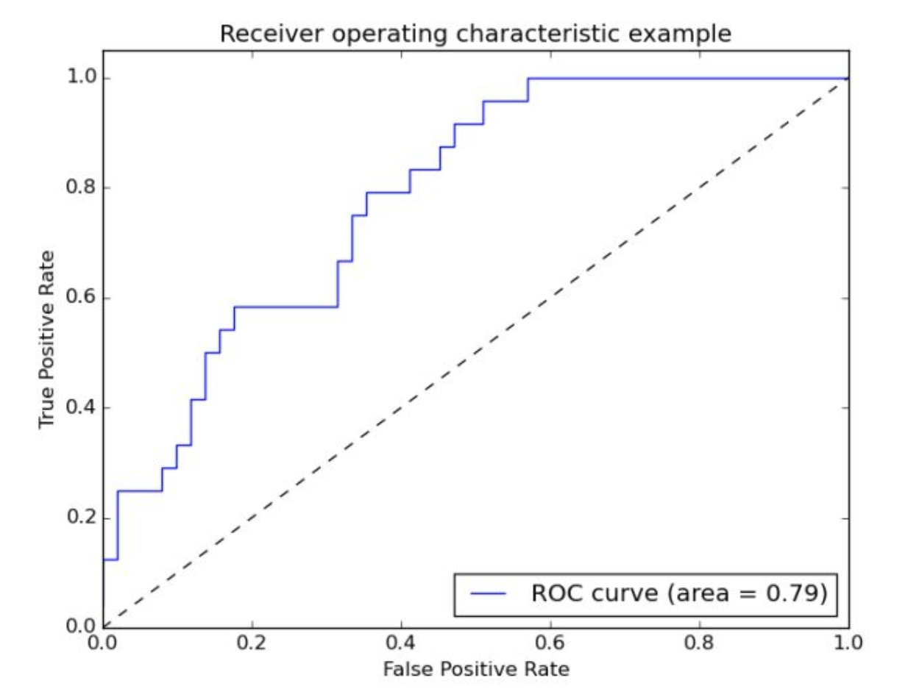

近期做的一个风险评估项目中要用到AUC和KS，总结一下。
对于二分类，分类结果可归为四类：
| 预测正类 | 预测负类 | |
|---|---|---|
| 真实正类 | TP | FN |
| 真实负类 | FP | TN |
注：T/F表示是否分错，P/N表示分到了正类或负类
ROC曲线
通常二分类器会输出一个0～1之间的实数，如果设定一个阈值$\alpha$，则一般会将输出概率大于$\alpha$的归为正类，小于的归为负类。
给定所有样本的输出概率，我们可以将输出概率从大到小排序。从前往后遍历所有样本，将当前样本的输出概率作为$\alpha$，则前面的所有样本会归为正类，后面的是负类。在所有样本都分完类后，就可以计算TP，FN，FP和TN了。
这里有两个重要的统计量：
- 真正类率（真实为真类，预测也为正类）：$TPR = \frac{TP}{TP + FN}$
- 假正类率（真实为负类，预测为正类，误判）：$FPR = \frac{FP}{FP+TN}$
将所有样本的$(FPR, TPR)$作为坐标，按顺序依次画出即可得到ROC曲线。

如果所示，对角线表示随机模型。（0，1）是理想模型
通常来说，如果一个ROC曲线如果能把另外一个完全包住，则说明前者分类器性能更优越。但是如果有交叉，就很难判断孰优孰劣了，这时可通过计算AUC（Area Under Curve）来比较。
使用AUC评价模型的好处是可以有效减弱不平衡数据集对评测结果的影响。如果一个数据集非常不平衡，比如正类特别多，这时模型会偏向预测正样本，这时FPR会非常高，曲线像（1，0）偏移，导致AUC减小。
KS曲线
KS曲线和ROC曲线关系密切。ROC曲线将TPR和FPR画在一条曲线上，KS曲线则是将FPR和TPR画作两条曲线，横轴是阈值$\alpha$。KS值的定义为：
如果一个分类器性能足够好，两条曲线应该分的足够开，即KS值越大。